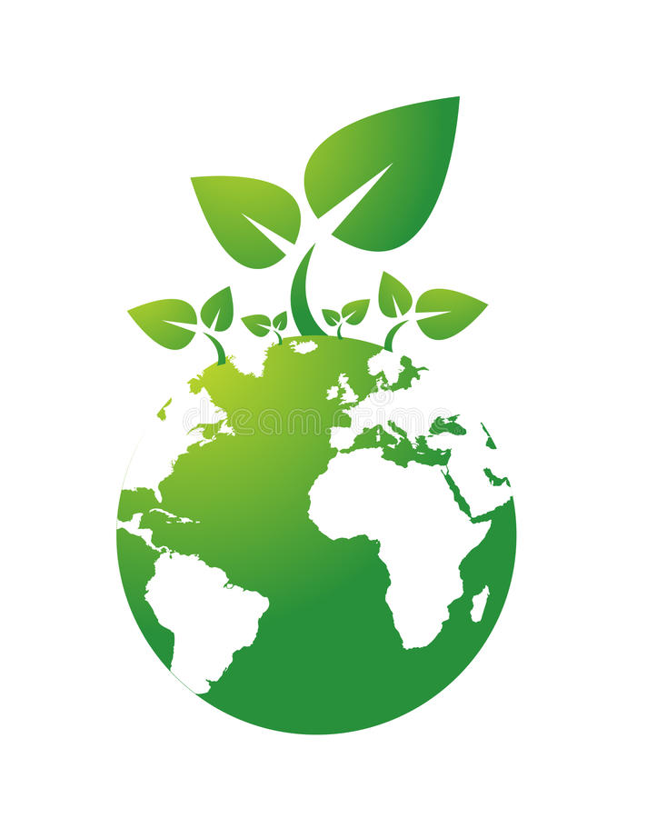
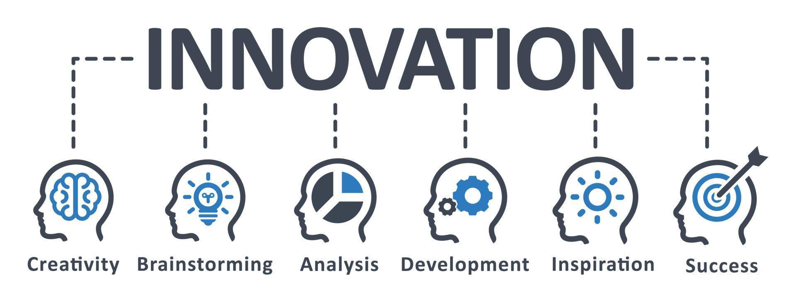
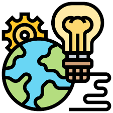

<!DOCTYPE html>
<html
lang="es"></html>
<head>
    <meta charset="UTF-8">
    <meta http-equiv="X-UA-Compatible" content="IE=edge">
    <meta name="viewport" content="width=device-width, initial-scale=1.0">
    <title>Environmental technology</title>
    <link rel="shortcut icon" href="./images/icons8-globe-africa-16.png" type="image/x-icon">
    <link rel="stylesheet" href="./css/normalize.css">
    <link rel="stylesheet" href="./css/estilos.css">

    <meta name="theme-color" content="#2091F9">

    <meta name="title" content="ambientetech">
    <meta name="description"
        content="mi primera pagina web, soy una descripción que verás cuando busques algo de mi temática en Google.">


    <meta property="og:type" content="website">
    <meta property="og:url" content="https://andres943.github.io">
    <meta property="og:title" content="environmental technology">
    <meta property="og:description"
        content=" Frontend-Fundamentals-2022, soy una descripción que verás cuando busques algo de mi temática en Google.">
    <meta property="og:image" content="https://andres943.github.io/images/css.jpg">

    <meta property="Gmail:card" content="summary_large_image">
    <meta property="Gmail:url" content="https://www.google.com/">
    <meta property="Gmail:title" content="Environmental Technology.">
    <meta property="Gmail:description"
        content="Hola, soy una descripción que verás cuando busques algo de mi temática en Google.">
    <meta property="twitter:image" content="https://andres943.github.io/images/css.jpg">

</head>
<body>

   <header class="hero">
   <nav class="nav container">
        <div class="nav__logo">
            <h2 class="nav__title">environmental technology</h2>
        </div>

        <ul class="nav__link nav__link--menu">
            <li class="nav__items">
                <a href="#" class="nav__links">beginning</a>
            </li>
            <li class="nav__items">
                <a href="#" class="nav__links">complaint</a>
            </li>
            <li class="nav__items">
                <a href="#" class="nav__links">Contact</a>
            </li>
            <li class="nav__items">
                <a href="#" class="nav__links">Blog</a>
            </li>

            
        </ul>

        <div class="nav__menu">
            
        </div>
    </nav>

    <section class="hero__container container">
        <h1 class="hero__title">Environmental Technology.</h1>
        <p class="hero__paragraph">Some environmental technologies that maintain sustainable development are: recycling, water purification, wastewater treatment, biomass and biotechnology environmental improvements, nanotechnology gas treatment, solid waste management, and renewable energy; Some technologies help directly to the conservation of renewable energy from the earth, while others help the environment, reducing the amount of waste produced by human activities "the technology is emerging" and the hope of DISSEMINATION AND ACTION IS IN YOU. Technological processes have the ability to reduce the consumption of raw materials and energy that affect climate change, enabling the technological society to develop solution mechanisms.</p>
        <a href="#" class="cta">top news</a>
    </section>
    </header>
    <main>
        <section class="container about">
            <h2 class="subtitle">The objectives of clean technologies are based on four pillars:</h2>
            <p class="about__paragraph">Reduction of pollution in traditional industry (the destination of industrial waste).
                Technological-environmental renewal in industrial processes (the optimization of the production circuits themselves).
                Industrial globalization within the framework of sustainable development (the global spread of this technological culture).
                Reinsertion of production in its local ecological base (the return to a logic in which productive activities are thought of as integrated into a physical region).</p>

            <div class="about__main">
                <article class="about__icons">
                    
                    <h3 class="about__title">Related Posts</h3>
                    <p class="about__paragrah">AGA is committed to innovation and technology as key elements for urban water</p>
                </article>

                <article class="about__icons">
                    
                    <h3 class="about__title">ENVIRONMENTAL TECHNOLOGY BLOG</h3>
                    <p class="about__paragrah">https://procycla.es/blog/, PROCYCLA PARTICIPA DEL CONGRESO BIT 2022 (BIOECONOMÍA, INNOVACIÓN Y TECNOLOGÍA) EN LLEIDA</p>
                </article>

                <article class="about__icons">
                    
                    <h3 class="about__title">PROJECTS</h3>
                    <p class="about__paragrah">Computational simulation study in fluid dynamics (CFD) to determine models of agitation and heat transfer in anaerobic digestion processes</p>
                </article>
            </div>
        </section>

        <section class="knowledge">
            <div class="knowledge__container container">
                <div class="knowledege__texts">
                    <h2 class="subtitle">ISO 14001 Certificates (Environmental Management System)</h2>
                    <p class="knowledge__paragraph">ISO 14001 is a set of guidelines that can be applied to any company or organization on a voluntary basis. It entails establishing a declared environmental policy and implementing an Environmental Management System fulfilling a series of regulatory obligations. This can be accredited through ISO Certificates with international validity. This will allow you to demonstrate your ability to prevent and control the effects of your economic activity on the environment.</p>
                    <a href="#" class="cta">CONTACT WITH PROCYCLA</a>
                </div>

                <figure class="knowledge__video">
                    <video controls width="600" height="400">
                        <source type="video/webm" src="./video/Video Conciencia Ambiental.mp4" class="knowledge__video">
                    </video>
                </figure>
            </div>
        </section>

        <section class="price container">
            <h2 class="subtitle">innovations to achieve a sustainable world</h2>

            <div class="price__table">
                <div class="price__element">
                    <p class="price__name">Roofs and vertical gardens</p>
                    <h3 class="price__price">Drones</h3>

                    <div class="price__items">
                        <p class="price__features">Pollution collectors</p>
                        <p class="price__features">Smart Home Control</p>
                        <p class="price__features">Repurposed phones that detect illegal logging</p>
                    </div>

                    <a href="#" class="price__cta">innovation</a>
                </div>


                <div class="price__element price__element--best">
                    <p class="price__name">renewable energies</p>
                    <h3 class="price__price">Hydraulic or hydroelectric energy</h3>

                    <div class="price__items">
                        <p class="price__features">Biomass and biogas</p>
                        <p class="price__features">Bioethanol</p>
                        <p class="price__features">Solar energy</p>
                    </div>

                    <a href="#" class="price__cta">clean energies</a>
                </div>


                <div class="price__element">
                    <p class="price__name">to take care of the environment</p>
                    <h3 class="price__price">Toxic eating bacteria</h3>

                    <div class="price__items">
                        <p class="price__features">water in the desert</p>
                        <p class="price__features">A natural water purification system</p>
                        <p class="price__features">A sensor to control the water</p>
                    </div>
                    
                    <a href="#" class="price__cta">solutions</a>
                </div>
                  
            </div>    

        </section>

            <section class="testimony">
                <div class="testimony__container container">
                      
                      

                        <section class="testimony__body testimony__body--show" data-id="1">
                            <div class="testimony__texts">
                                <h2 class="subtitle"> my name is andres salinas fuentes, <span class="testimony__course"> estudiante de bedu </span></h2>
                                <p class="testimony__review">Computer systems can be defined as the computer equipment itself with its system and application software and electronic storage media, local area networks and wide area networks.</p>
                            </div>

                            <figure class="testimony__picture">
                                
                            </figure>
                        </section>
        
                        <section class="testimony__body" data-id="2">
                            <div class="testimony__texts">
                                <h2 class="subtitle"> my name is Lizbeth Abarca Rosas, <span class="testimony__course"> estudiante de bedu </span></h2>
                                <p class="testimony__review">Learn more about JAVA, here you will find different publications on the object-oriented programming language JAVA</p>
                            </div>
        
                            <figure class="testimony__picture">
                                
                            </figure>
                        </section>
        
                        <section class="testimony__body" data-id="3">
                            <div class="testimony__texts">
                                <h2 class="subtitle">my name is Luis Arturo Diaz Oleta, <span class="testimony__course">estudiante de Bedu.</span></h2>
                                <p class="testimony__review"> The computer apprentice is a blog aimed at people like you who want to learn more about the world of mathematics and computer science.</p>
                            </div>
                        
                        <figure class="testimony__picture">
                            
                        </figure>
                </div>    
            </section>


            <section class="questions container">
                <h2 class="subtitle">Impact of Technological Management on the Environment</h2>
                <p class="questions__paragraph">Technologies, intellectual capital, process - production, polluting elements, organizations, development, impact, environment.</p>
    
                <section class="questions__container">
                    <article class="questions__padding">
                        <div class="questions__answer">
                            <h3 class="questions__title">¿How does technological development influence our lives and the environment?
                                <span class="questions__arrow">
                                    
                                </span>
                            </h3>
    
                            <p class="questions__show">Well-applied technology helps us, for example: to organize ourselves better, to learn new things, to keep track of our goals and personal progress or to shorten distances with friends or family.</p>
                        </div>
                    </article>
    
                    <article class="questions__padding">
                        <div class="questions__answer">
                            <h3 class="questions__title">¿What are the technologies that affect the environment?
                                <span class="questions__arrow">
                                    
                                </span>
                            </h3>
    
                            <p class="questions__show">Cell phones, gps, PDAs, desktop computers, laptops, recorders, iPods and we could go on with the long list of gadgets that, once their functions have been fulfilled, begin to form part of technological contamination.</p>
                        </div>
                    </article>
    
                    <article class="questions__padding">
                        <div class="questions__answer">
                            <h3 class="questions__title">¿How much does technology pollute?
                                <span class="questions__arrow">
                                    
                                </span>
                            </h3>
    
                            <p class="questions__show">The ecological footprint of this digital traffic is equivalent to an approximate consumption of 7% of the world's electricity according to Greenpeace. The consulting firm Mckinsey calculates that by the year 2020, the information technology market will produce around 3 or 4% of all CO2 emissions in the world.</p>
                        </div>
                    </article>
                </section>
    
                <section class="questions__offer">
                    <h2 class="subtitle">¿are you ready for environmental technology?</h2>
                    <p class="questions__copy">Technology; Keep listening to you in your window, simulated conversions in the distance of a monitor with the whole thing you call technology that has no heart, "a fake smile" Directed Friendships! And an email every hour, Thrown to one side you accommodate it, in what you call a computer That the mind almost erases makes you be like a robot And you dishonor humanity. How beautiful those days were! When her letters were read, they carried her on horseback. Great heirloom of the day! Other moments were expected To see face to face looking at each other with smiles And it touched the heart. </p>
                    <a href="#" class="cta">learn now</a>
                </section>
            </section>
    </main>
        
    
    <footer class="footer">
        <section class="footer__container container">
            <nav class="nav nav--footer">
                <h2 class="footer__title">environmental technology</h2>
               
                <ul class="nav__link nav__link--footer">
                    <li class="nav__items">
                        <a href="#" class="nav__links">beginning</a>
                    </li>
                    <li class="nav__items">
                        <a href="#" class="nav__links">complaint</a>
                    </li>
                    <li class="nav__items">
                        <a href="#" class="nav__links">Contact</a>
                    </li>
                    <li class="nav__items">
                        <a href="#" class="nav__links">Blog</a>
                    </li>
                </li>
                </ul> 
            </nav>

            <form class="footer__form" action="https://formspree.io/f/mknkkrkj" method="POST">
                <h2 class="footer__newsletter">Suscribete a la newsletter</h2>
                <div class="footer__inputs">
                    <input type="email" placeholder="Email:" class="footer__input" name="_replyto">
                    <input type="submit" value="Registrate" class="footer__submit">
                </div>
            </form>
        </section>

        <section class="footer__copy container">
            <div class="footer__social">
                <a href="#" class="footer__icons"></a>
                <a href="#" class="footer__icons"></a>
                <a href="#" class="footer__icons"></a>
            </div>
            <h3 class="footer__copyright">All rights reserved &copy; bedu "Frontend-Fundamentals-Santander-2022"</h3>
        </section>
    </footer>
                
        </section>

        <script src="./js/slider.js"></script>
        <script src="./js/questions.js"></script>
        <script src="./js/menu.js"></script>
</body>
    
</html>